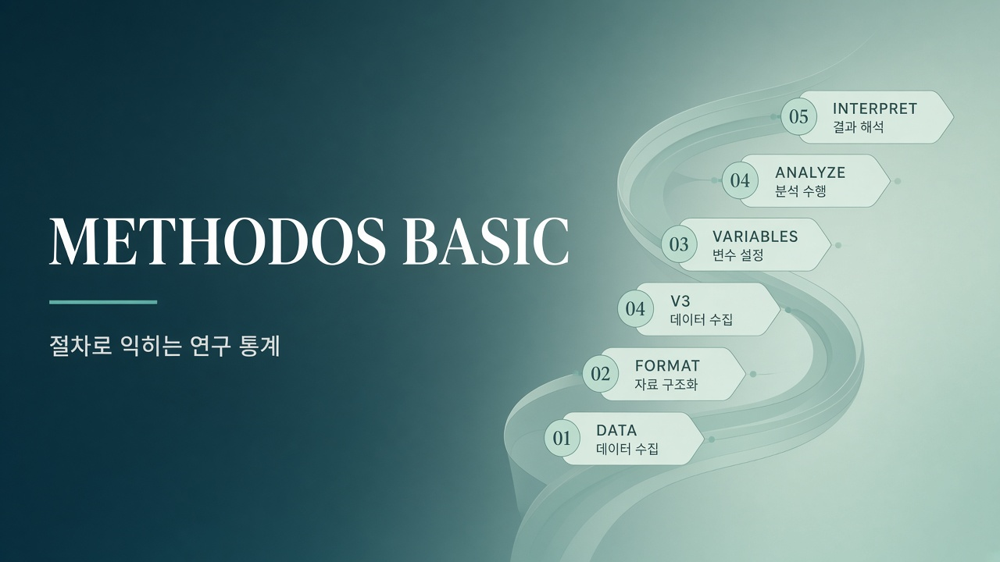

Desktop · 통계분석
methodos-basic 가이드
절차로 익히는 연구용 통계 — 소개와 절차 가이드입니다.

Methodos Basic LT-4
Methodos Basic은 분석을 도와주는 자동화 프로그램입니다. 결과만 넘기지 않고, 절차적 단계와 통계 이해를 함께 높이도록 만들었습니다. 예제·학습으로 개념을 익힌 뒤, 자료를 보고 변수를 배정하며 분석·그래프·결과까지 같은 흐름으로 진행합니다. 쉬운 주석 · 한·영·중 전환으로 해외 유학생도 함께 씁니다.
인터랙티브 절차 가이드
번호 + 메뉴 자막이 단계별로 이어지는 Framer Motion 절차입니다. 절차 A·B는 같은 앱 안에 있습니다.
절차 A · 예제를 통한 분석
01 자료 보기 → 02 포맷 받기 → 03 내 형식 변환 → 04 변수 칸 → 05 변수 선택 → 06 분석 → 07 그래프 → 08 결과
절차 B · 학습으로 쌓기
01 명칭 → 02 초급 → 03 중급 → 04 고급 → 05 예제 확인 → 06 작업대 적용
왼쪽 메뉴 · 요약 절차
홈
단계 카드 확인 후 방법 정하기 / 통계 계산
통계방법 정하기·찾기·라이브러리
목적→기법 연결, 예제 실행
예제 자료
분류·설명 후 작업대에 올리기
작업대·통계 계산
자료→변수 배정→실행
그래프·결과
패턴과 해석 문장 대조
학습·설정
명칭/초·중·고급, 언어(한·영·중)
핵심 한 줄: 예제 포맷을 받아 내 자료로 바꾼 뒤, 같은 메뉴 절차로 분석·그래프·결과를 읽습니다.